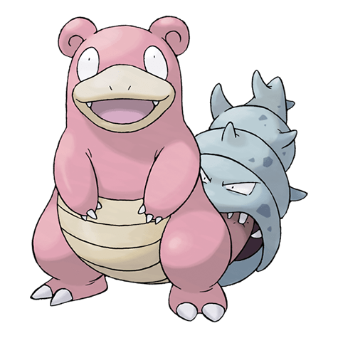

Назад
Слоубро

Слоубро — Покемон 1 поколения под номером 80 в Покедекс. Обитает он в регионе Канто и относится к Психическому и Водному типу. Это одна с последних стадий эволюции Покемона Слоупока. На хвосте Слоубро сидит Шеллдер, который прочно вцепился в него своей острой хваткой. В результате, Слоубро больше не может использовать свой хвост для рыбалки. Это вынуждает его спускаться в воду и плавать там в поисках добычи.
Тип:
Водный
Психический
Эволюция
# 080 Слоубро
Финальная стадия